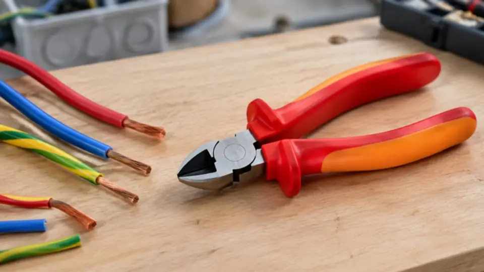
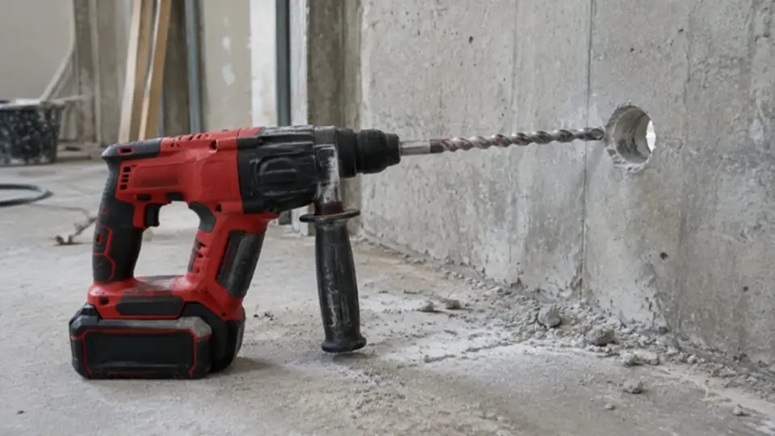
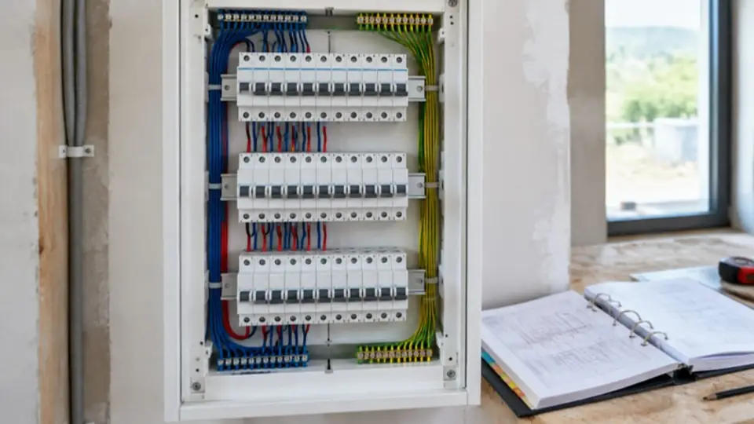
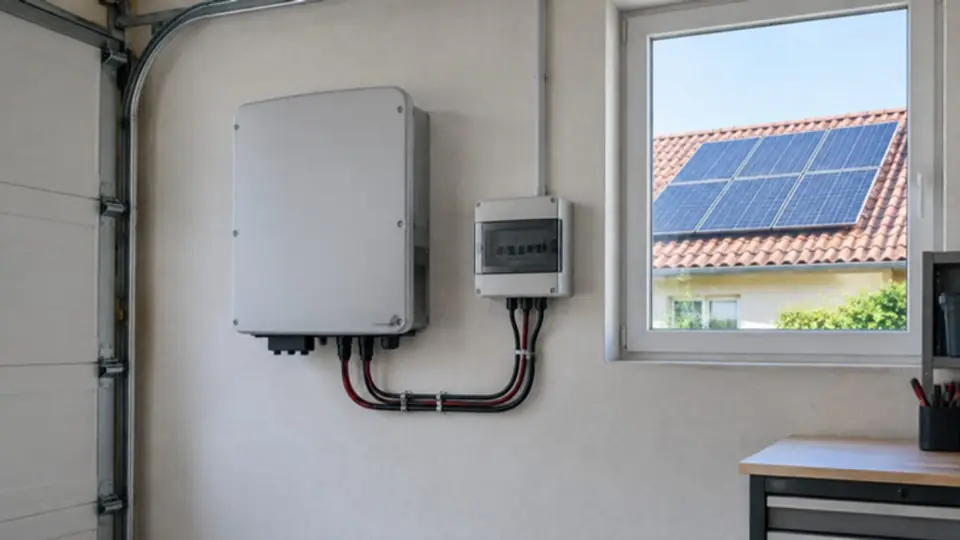

Actualités
Normes, réglementation, nouveau matériel : ce qui change pour l'électricien. Chaque information est vérifiée sur une source officielle ou chez le fabricant, avec le lien pour aller plus loin.

Matériel · 12 novembre 2026
Knipex a renouvelé sa pince coupante diagonale à forte démultiplication de 250 mm (74 250), disponible depuis août 2026 : le fabricant annonce qu'elle coupe 20 % plus facilement que le modèle précédent. Les versions isolées pour travaux électriques portent les références 74 06 250 et 74 07 250. Pour le photovoltaïque, la nouvelle PreciForce SAC (97 52 42 6) coupe, dénude et sertit sans changer d'outil les conducteurs des connecteurs MC4 et MC4 Evo 2, en 6 mm².
À retenir : Une pince isolée 1000 V reste un outil de protection : on vérifie son isolant avant chaque usage, et elle ne remplace jamais la consignation.
Source : Blog officiel Knipex, « KNIPEXupdate Summer 2026 » · L'article
Image d'illustration générée, non contractuelle.

Matériel · 12 novembre 2026
Milwaukee a présenté en juillet 2026 deux perforateurs SDS-Max sur batterie 18 V, pour des perçages de 40 et 45 mm dans le béton, utiles par exemple pour les traversées de murs. Le modèle M18 FHACO540 frappe à 8,1 joules (mesure EPTA), contre 6,1 joules pour le précédent, soit 33 % de plus. Les deux modèles s'arrêtent automatiquement si le foret se bloque brutalement, ce qui évite que l'outil tourne dans les mains.
À retenir : Avant de percer un mur, on repère les canalisations électriques encastrées (zones de passage, détecteur) : un perforateur ne fait pas la différence avec une gaine.
Source : Milwaukee, dossier de presse « Perforateurs M18 FUEL SDS-MAX », juillet 2026 · L'article
Image d'illustration générée, non contractuelle.

Normes · 12 novembre 2026
La norme des installations électriques basse tension a été entièrement refondue et publiée le 23 août 2024, sous la forme d'une série de 21 normes numérotées NF C 15-100-X. Pendant un an, l'ancienne version de 2002 et la nouvelle ont pu coexister. Cette période de transition s'est terminée fin août 2025 : pour un chantier d'aujourd'hui, c'est la série 2024 qui s'applique.
À retenir : Sur un dossier ancien, c'est la date de la demande d'attestation au Consuel qui dit quelle version s'applique.
Source : Legrand, « Révision de la norme NF C 15-100 » · L'article
Image d'illustration générée, non contractuelle.

Photovoltaïque · 12 novembre 2026
Depuis 2025, une installation photovoltaïque raccordée au réseau doit fournir un certificat de conformité de ses onduleurs à la norme NF EN 50549. Une dérogation laissait passer des certificats établis sans la norme d'essais NF EN 50549-10, le temps que les fabricants s'adaptent. Elle a pris fin le 1er juillet 2026 pour les installations de 36 kVA ou moins.
À retenir : Avant de poser un onduleur, demander au fournisseur le certificat établi selon la NF EN 50549-10 : le Consuel le vérifie.
Source : photovoltaique.info (site d'information soutenu par l'ADEME), 16 décembre 2025 · L'article
Image d'illustration générée, non contractuelle.
Une information te semble fausse ou dépassée ? Elle est datée : la norme ou le texte cité fait toujours foi.